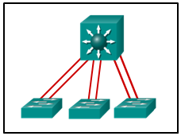

1.¿Qué protocolo de enrutamiento puede escalar para redes grandes y utiliza áreas no troncales para la expansión?
- EIGRP
- OSPF *
- BGP
- RIPv2
- @javi__super
2.En el modelo de diseño jerárquico de Cisco, ¿qué capa es más probable que tenga un cambio de configuración fijo que las otras capas?
- acceso *
- distribución
- transporte
- Internet
- @javi__super
3.Un ingeniero de redes está interesado en obtener información específica relevante para la operación de los dispositivos Cisco de la capa de distribución y acceso. ¿Qué comando proporciona información común relevante para ambos tipos de dispositivos?
- Mostrar vecinos cdp *
- mostrar protocolos ip
- mostrar interfaz ip
- Mostrar seguridad portuaria
- @javi__super
4.Una red conmutada ha convergido completamente. Actualmente, todos los conmutadores tienen un número de revisión de VTP de 5. Se ha agregado a la red un nuevo conmutador que se ha configurado como servidor VTP. El nuevo conmutador tiene un número de revisión VTP de 4. ¿Qué ocurrirá dentro de la red?
- Las bases de datos de VTP permanecerán sin cambios en todos los conmutadores, con la excepción del conmutador recién agregado. *
- La red ya no compartirá las actualizaciones de la base de datos de VLAN.
- El interruptor recién agregado cambiará automáticamente al modo de cliente VTP.
- Todos los conmutadores en la red actualizarán su base de datos de VTP para reflejar la base de datos de VTP del nuevo conmutador.
- @javi__super
5.Un administrador de red está agregando una nueva VLAN para probar. La compañía utiliza VTP y la VLAN no está conectada directamente a ninguno de los conmutadores configurados como servidores VTP. ¿Cuál es el mejor método para agregar esta VLAN a la red?
- Agregue manualmente la VLAN a la base de datos de VLAN de los servidores VTP. *
- Cambie el interruptor que tiene hosts conectados en la nueva VLAN para que esté en modo de servidor VTP.
- Configure un puerto en los servidores VTP para la misma VLAN que la nueva VLAN.
- @javi__super
- Configure las interfaces en el conmutador que tiene hosts conectados en la nueva VLAN y reinicie el conmutador.
6.¿Qué tres pares de modos de trunking establecerán un enlace troncal funcional entre dos switches Cisco? (Elige tres.)
- dinámico deseable - dinámico deseable *
- auto dinámico - auto dinámico
- dinámico deseable - dinámico automático *
- dinámica deseable - tronco *
- @javi__super
7.Consulte la presentación. La configuración muestra los comandos ingresados por un administrador de red para el enrutamiento entre VLAN. Sin embargo, el host PCA no puede comunicarse con PCB. ¿Qué parte de la configuración de inter-VLAN causa el problema?
- Configuración de VLAN *
- trunking
- modo de puerto en el interruptor de dos
- Puertos FastEthernet
- @javi__super
8.Consulte la presentación. ¿Cuál es el papel del interruptor SW3?
- puente raíz
- interruptor designado
- interruptor de borde
- puente habilitado
- @javi__super
9.¿Qué estándar de árbol de expansión fue desarrollado por Cisco para proporcionar instancias separadas de 802.1w por VLAN?
- PVST rápido + *
- RSTP
- 802.1D
- MSTP
- @javi__super
10.¿Qué especificación de toda la industria se desarrolló para disminuir el tiempo que se necesita para pasar al estado de reenvío por los puertos del switch que operan en una topología de conmutación redundante?
- RSTP *
- VLSM
- PVST
- 802.1Q
- @javi__super
11.Consulte la presentación. Un administrador de red está verificando la ID del puente y el estado de este cambio en la elección de STP. ¿Qué afirmación es correcta en función de la salida del comando?
- La prioridad del puente de Switch_2 se ha reducido a un valor predefinido para convertirse en el puente raíz. *
- La prioridad del puente de Switch_2 se ha reducido a un valor predefinido para convertirse en el puente raíz de respaldo.
- La instancia de STP en Switch_2 está fallando debido a que no hay puertos bloqueados y todos los switches creen que son la raíz.
- La instancia de STP en Switch_2 usa la prioridad predeterminada de STP y la elección se basa en la dirección MAC de Switch_2.
- @javi__super
12.Consulte la presentación. ¿Qué tecnología de conmutación permitiría la transmisión de datos a través de cada enlace de conmutación de la capa de acceso e impediría que el puerto se bloquee debido al enlace redundante?
-

- EtherChannel *
- HSRP
- PortFast
- trunking
- @javi__super
13.¿Cuáles son las dos ventajas de EtherChannel? (Escoge dos.)
- La configuración de la interfaz EtherChannel proporciona coherencia en la configuración de los enlaces físicos. *
- El equilibrio de carga se produce entre los enlaces configurados como diferentes EtherChannels.
- EtherChannel utiliza enlaces físicos actualizados para proporcionar un mayor ancho de banda.
- Spanning Tree Protocol ve los enlaces físicos en un EtherChannel como una conexión lógica. *
- @javi__super
14.Cuando se implementa EtherChannel, se agrupan múltiples interfaces físicas en qué tipo de conexión lógica?
- canal de puerto *
- rango de interfaz
- bucle de retorno
- Interfaz VLAN
- @javi__super
15.Cuando se configura un rango de puertos para EtherChannel, ¿qué modo configurará LACP en un puerto solo si el puerto recibe paquetes LACP de otro dispositivo?
- pasivo *
- deseable
- auto
- activo
- @javi__super
16.Un nuevo director de información (CIO) ha solicitado la implementación de un protocolo de enrutamiento dinámico de estado de enlace. ¿Qué dos protocolos de enrutamiento cumplen este requisito? (Escoge dos.)
- IS-IS *
- OSPF *
- BGP
- RIPv2
- @javi__super
17.Consulte la presentación. Un administrador de red está utilizando RIPv1 en la topología de red expuesta. ¿Qué haría el enrutador R2 con un paquete que se origina en la red 192.168.4.0/24 y está destinado a la red 172.16.1.0/24?
- El enrutador cargará el balance y reenviará los paquetes a R1 y R3. *
- El router dejará caer el paquete.
- El enrutador reenviará el paquete a R3.
- El enrutador reenviará el paquete a R1.
- @javi__super
18.¿Qué describe mejor la operación de los protocolos de enrutamiento por vector de distancia?
- Envían sus tablas de enrutamiento a vecinos directamente conectados. *
- Usan el conteo de saltos como su única métrica.
- Solo envían actualizaciones cuando se agrega una nueva red.
- Ellos inundan toda la red con actualizaciones de enrutamiento.
- @javi__super
19.¿Qué enunciado define la velocidad de convergencia de los protocolos de enrutamiento?
- El tiempo que tarda un enrutador dentro de una red para reenviar información de enrutamiento. *
- El tiempo que tarda un enrutador en formar una adyacencia adyacente.
- El tiempo que tarda un enrutador en calcular el costo de un enlace.
- El tiempo que tarda un enrutador en conocer los enlaces conectados directamente.
- @javi__super
20.¿Qué se asocia con los protocolos de enrutamiento de estado de enlace?
- Los cálculos de la ruta más corta primero *
- baja sobrecarga del procesador
- veneno reverso
- bucles de enrutamiento
- @javi__super
21.¿Qué dos elementos de información están contenidos dentro de un paquete de estado de enlace (LSP)? (Escoge dos.)
- ancho de banda *
- número de saltos
- Tipo de enlace *
- carga
- @javi__super
22.¿Cuál es la diferencia entre los protocolos de enrutamiento EIGRP y OSPF?
- EIGRP admite enrutamiento de diferentes protocolos de capa de red, mientras que OSPF admite enrutamiento solo protocolos basados en IP. *
- EIGRP usa el conteo de saltos como la métrica y OSPF usa el costo como la métrica.
- EIGRP es una implementación de EGP mientras que OSPF es una implementación de IGP.
- EIGRP solo admite el equilibrio de carga de igual costo mientras que OSPF admite tanto el equilibrio de carga de igual costo como el de costo desigual.
- @javi__super
23.¿Qué protocolo utiliza EIGRP para la entrega y recepción de paquetes EIGRP?
- RTP *
- TCP
- UDP
- aaaa
- @javi__super
24.¿Cómo se calcula el ancho de banda a una red de destino por EIGRP?
- el ancho de banda configurado más bajo de cualquier interfaz a lo largo de la ruta *
- la suma de los anchos de banda configurados de todas las interfaces a lo largo de la ruta
- el mayor ancho de banda configurado de cualquier interfaz a lo largo de la ruta
- el ancho de banda de la interfaz de ingreso del enrutador del último salto
- @javi__super
25.Consulte la presentación. Un administrador de red ha intentado implementar una ruta predeterminada desde R1 al ISP y propagar la ruta predeterminada a los vecinos de EIGRP. La conectividad remota de los enrutadores vecinos EIGRP al ISP conectado a R1 está fallando. Según la salida de la exposición, ¿cuál es la causa más probable del problema?
- El comando redistribuir estático no se ha emitido en R1. *
- El comando default-information originate no se ha emitido en R1.
- No hay relaciones de vecinos EIGRP en R1.
- El comando ip route debe especificar una dirección IP de siguiente salto en lugar de una interfaz de salida al crear una ruta predeterminada.
- @javi__super
26.Consulte la presentación. ¿Qué afirmación refleja con precisión la configuración de enrutamiento en el enrutador HQ?
- Se configuró una ruta estática predeterminada en este enrutador. *
- Se aprendió una ruta estática predeterminada a través de las actualizaciones de enrutamiento EIGRP.
- La ruta estática predeterminada se debe redistribuir utilizando el comando originado de información predeterminada.
- La dirección IP asignada a la interfaz GigabitEthernet0 / 0 es 172.16.2.0 255.255.255.0.
- @javi__super
27.¿Qué comando limitaría la cantidad de ancho de banda que utiliza EIGRP para el tráfico de control de protocolo a aproximadamente 128 Kb / s en un enlace de 1.544 Mb / s?
- porcentaje de ancho de banda ip eigrp 100 8 *
- caminos máximos 8
- varianza 8
- tráfico compartido
- @javi__super
28.¿Qué criterio prefiere el enrutador para elegir una ID de enrutador?
- el comando router-id rid *
- la dirección IP de la interfaz de bucle de retorno configurada más alta en el enrutador
- La dirección IP de la interfaz activa más alta en el enrutador
- la dirección IP de la interfaz activa más alta habilitada para OSPF
- @javi__super
29.¿Cuál es el efecto de ingresar a la red 192.168.10.1 0.0.0.0 comando del área 0 en el modo de configuración del enrutador?
- Los anuncios de OSPF incluirán la red en la interfaz con la dirección IPv4 192.168.10.1. *
- La interfaz con la dirección IPv4 192.168.10.1 será una interfaz pasiva.
- Este comando no tendrá efecto porque utiliza una máscara de comodín de cero cuádruple.
- Los anuncios de OSPF incluirán la dirección IPv4 específica 192.168.10.1.
- @javi__super
30.¿Qué tres requisitos son necesarios para que dos enrutadores OSPFv2 formen una adyacencia? (Elige tres.)
- Los dos enrutadores deben incluir la red de enlace entre enrutadores en un comando de red OSPFv2. *
- Los temporizadores hello o dead de OSPF en cada enrutador deben coincidir. *
- Las máscaras de subred de la interfaz de enlace deben coincidir. *
- El ID de proceso OSPFv2 debe ser el mismo en cada enrutador.
- @javi__super
31.¿Qué tipo de enrutador OSPF conecta un área OSPF a dominios de enrutamiento que no son OSPF?
- ASBR *
- ABR
- DR
- enrutador de red troncal
- @javi__super
32.¿Qué función realiza un OSPF ABR?
- inyectar LSA tipo 3 en un área *
- publicidad de la ID del enrutador de cualquier enrutador designado dentro de un área
- originar LSA tipo 5 en un área
- Inundaciones tipo 2 LSA dentro de un área
- @javi__super
33.¿En qué modo se emite el comando de máscara de dirección de rango de área-id.
- modo de configuración del enrutador *
- modo de configuración global
- Modo de configuración de la interfaz de las interfaces del área 0
- Modo de configuración de la interfaz de todas las interfaces participantes
- @javi__super
34.Consulte la presentación. ¿Cuáles son las tres elecciones resultantes de DR y DBR para la topología dada? (Elige tres.)
- R3 es DR para el segmento A. *
- R4 es BDR para el segmento B.
- R3 es BDR para el segmento B. *
- R5 es DR para el segmento B. *
- @javi__super
35.Consulte la presentación. ¿Cómo se enteró este enrutador de la ruta resaltada en la tabla de enrutamiento?
- al recibir una actualización de otro enrutador OSPF que tiene configurado el comando de origen de información predeterminada *
- Al ingresar el comando de modo de configuración del enrutador se origina la información predeterminada
- ingresando el modo de configuración global comando ip route 0.0.0.0 0.0.0.0 tipo de interfaz tipo de interfaz
- ingresando el modo de configuración global comando ip route 0.0.0.0 0.0.0.0 ip-address
- @javi__super
36.¿Qué comando se puede usar para ver las adyacencias OSPF con los enrutadores vecinos junto con el estado de transición?
- mostrar ip ospf vecino *
- mostrar protocolos ip
- Mostrar interfaz ip ospf
- mostrar running-config
- @javi__super
37.Haga coincidir la descripción con el tipo de paquete EIGRP. (No se utilizan todas las opciones).
- Pregunta
- Respuesta
- @javi__super
.jpg)
38.Empareja cada descripción con su tipo de LSA correspondiente. (No se utilizan todas las opciones).
- Pregunta
- Respuesta
- @javi__super
39.¿Cuál es el término que se usa para el área de una red que se ve afectada cuando un dispositivo o servicio de red experimenta problemas?
- dominio de falla *
- dominio de colisión
- dominio de difusión
- dominio de usuario
- @javi__super
40.¿Qué término se usa para expresar el grosor o la altura de un interruptor?
- unidad de rack *
- densidad de puertos
- tamaño de dominio
- tamaño del módulo
- @javi__super
41.¿Qué cambios de configuración incrementarán el número de revisión de configuración en el servidor VTP?
- configurar o eliminar una VLAN o crear un nombre de VLAN *
- configurando enlaces troncales en el servidor VTP
- configurando o cambiando la contraseña VTP
- configurando o cambiando el nombre de dominio VTP
- @javi__super
42.¿Cuáles son las tres características de VTP? (Elige tres.)
- En el modo VTP predeterminado, las VLAN se pueden crear y modificar en un conmutador. *
- Los conmutadores en el modo de servidor VTP almacenan VLAN en la base de datos vlan.dat. *
- Los conmutadores habilitados para VTP intercambian tres tipos de anuncios: rutas de resumen, anuncios de subred y solicitudes de anuncios de puentes transparentes.
- Las actualizaciones de VTP se intercambian solo a través de enlaces troncales. *
- @javi__super
43.¿Cuál es el propósito del archivo vlan.dat en un switch?
- Contiene la base de datos VLAN. *
- Mantiene la configuración en ejecución.
- Contiene la configuración guardada.
- Contiene el sistema operativo.
- @javi__super
44.¿Qué elimina los bucles de conmutación?
- Protocolo de árbol de expansión *
- temporizador de espera
- revés spoison
- Tiempo para vivir
- @javi__super
45.Una pequeña red de empresas tiene seis conmutadores de Capa 2 interconectados. Actualmente, todos los conmutadores utilizan el valor de prioridad de puente predeterminado. ¿Qué valor puede usarse para configurar la prioridad del puente de uno de los conmutadores para garantizar que se convierta en el puente raíz en este diseño?
- 28672 *
- 1
- 32768
- 34816
- @javi__super
46.¿Cuál es el valor utilizado para determinar qué puerto en un puente no root se convertirá en un puerto raíz en una red STP?
- el camino cuesta *
- La dirección MAC más alta de todos los puertos en el switch
- La dirección MAC más baja de todos los puertos en el switch
- el número de revisión VTP
- @javi__super
47.¿Qué tres estados STP se reemplazaron con el estado de descarte RSTP? (Elige tres.)
- escuchando *
- bloqueo *
- discapacitado *
- reenvío
- @javi__super
48.Como administrador de red, se le ha pedido que implemente EtherChannel en la red corporativa. ¿En qué consiste esta configuración?
- agrupando múltiples puertos físicos para aumentar el ancho de banda entre dos switches *
- Proporcionar enlaces redundantes que bloquean dinámicamente o reenvían el tráfico.
- Agrupando dos dispositivos para compartir una dirección IP virtual.
- proporcionar dispositivos redundantes para permitir que el tráfico fluya en caso de falla del dispositivo
- @javi__super
49.¿Qué comando iniciará el proceso para agrupar dos interfaces físicas para crear un grupo EtherChannel a través de LACP?
- rango de interfaz GigabitEthernet 0/4 - 5 *
- modo de grupo de canales 2 automático
- puerto de interfaz canal 2
- Modo de grupo de canales 1 deseable
- @javi__super
50.Un administrador de red está analizando las funciones que son compatibles con diferentes protocolos de redundancia de enrutador de primer salto. ¿Qué declaración es una característica que está asociada con GLBP?
- GLBP permite el equilibrio de carga entre los enrutadores. *
- No es propietario.
- Utiliza un maestro enrutador virtual.
- deseable
- @javi__super
51.Un administrador de red configuró un enlace EtherChannel con tres interfaces entre dos conmutadores. ¿Cuál es el resultado si una de las tres interfaces está inactiva?
- Las dos interfaces restantes continúan cargando el tráfico de balance. *
- El EtherChannel falla.
- Las dos interfaces restantes se convierten en enlaces separados entre los dos conmutadores.
- Una interfaz se convierte en un enlace activo para el tráfico de datos y la otra se convierte en un enlace de respaldo.
- @javi__super
52.Cuando se configura EtherChannel, ¿qué modo forzará una interfaz en un canal de puerto sin intercambiar paquetes de protocolos de agregación?
- en *
- activo
- auto
- deseable
- @javi__super
53.Consulte la presentación. Un administrador de red está revisando la configuración del switch S1. ¿Qué protocolo se ha implementado para agrupar varios puertos físicos en un enlace lógico?
- PAgP *
- DTP
- LACP
- STP
- @javi__super

54.¿Cuál es el término usado para describir una topología de red donde las subredes de un espacio de direcciones de red con clase principal están separadas entre sí por direcciones de una dirección de red con clase principal diferente?
- red no contigua *
- red multihomed
- red de cobertura
- red de datos
- @javi__super
55.¿Qué tipo de paquetes se envían cuando hay un cambio en la topología EIGRP?
- actualización limitada activada *
- hola
- reconocer
- respuesta
- @javi__super
56.¿Qué tres elementos de información utiliza inicialmente un protocolo de enrutamiento de estado de enlace como información de estado de enlace para enlaces conectados localmente? (Elige tres.)
- la dirección IP de la interfaz del enrutador de enlace y la máscara de subred *
- el tipo de enlace de red *
- el costo de ese enlace *
- aaaaaa
- @javi__super
57.¿Qué le indica a un enrutador de estado de enlace que un vecino es inalcanzable?
- si el enrutador ya no recibe paquetes de saludo *
- Si el enrutador ya no recibe actualizaciones de enrutamiento
- si el enrutador recibe una actualización con un número de saltos de 16
- Si el enrutador recibe un LSP con información previamente aprendida.
- @javi__super
58.¿Cuáles son las tres características de EIGRP? (Elige tres.)
- establece adyacencias de vecinos *
- utiliza el algoritmo de ruta más corta primero
- utiliza el protocolo de transporte confiable *
- soporta el equilibrio de carga de costos iguales y desiguales *
- @javi__super
59.¿Qué capacidad proporcionan los módulos dependientes del protocolo al protocolo de enrutamiento EIGRP?
- enrutar diferentes protocolos de Capa 3 *
- Intercambiar rutas resumen entre áreas.
- Combine rutas aprendidas de diferentes protocolos en una sola tabla de enrutamiento
- equilibrio de carga entre protocolos de enrutamiento
- @javi__super
60.¿Qué comando se debe usar para configurar EIGRP para que solo anuncie la red que está conectada a la interfaz Gigabit Ethernet 0/1?
- red 172.16.23.64 0.0.0.63 *
- red 172.16.23.0 255.255.255.192
- Red 172.16.23.64 0.0.0.127
- red 172.16.23.0 255.255.255.128
- @javi__super

61.¿Qué comando configurará una ruta estática por defecto de IPv6?
- enrutador (config) # ruta ipv6 :: / 0 s0 / 0/0 *
- enrutador (config) # ipv6 :: / 64 s0 / 0/0
- router (config-rtr) # redistribuye estática
- router (config) # ipv6 unicast-routing
- @javi__super
62.¿Qué protocolo de enrutamiento se puede configurar para equilibrar la carga en rutas con métricas desiguales mediante el uso del comando variance?
- EIGRP *
- OSPF
- OSPFv3
- RIPng
- @javi__super
63.¿Cuáles son las dos características de un protocolo de enrutamiento de estado de enlace? (Escoge dos.)
- Los enrutadores envían actualizaciones activadas en respuesta a un cambio. *
- Los enrutadores crean una topología de la red utilizando información de otros enrutadores. *
- La información de la base de datos para cada enrutador se obtiene de la misma fuente.
- Las rutas se eligen según el número más bajo de saltos al enrutador designado.
- @javi__super
64.Un enrutador está participando en un dominio OSPFv2. ¿Qué sucederá siempre si el intervalo muerto expira antes de que el enrutador reciba un paquete de saludo de un enrutador DROTHER OSPF adyacente?
- OSPF eliminará ese vecino de la base de datos de estado de enlace del enrutador. *
- OSPF ejecutará una nueva elección DR / BDR.
- SPF se ejecutará y determinará qué enrutador vecino está "inactivo".
- Se iniciará un nuevo temporizador de intervalo muerto de 4 veces el intervalo de saludo.
- @javi__super
65.En una configuración OSPFv2, ¿cuál es el efecto de ingresar a la red de comandos 192.168.1.1 0.0.0.0 área 0?
- Le indica al enrutador qué interfaz activar para el proceso de enrutamiento OSPF. *
- Permite que todas las redes 192.168.1.0 sean anunciadas.
- Habilita OSPF en todas las interfaces del enrutador.
- @javi__super
- Cambia el ID de enrutador del enrutador a 192.168.1.1.
66.¿Qué indica el costo de un enlace OSPF?
- Un costo más bajo indica un mejor camino hacia el destino que un costo más alto. *
- Un costo más alto para un enlace OSPF indica una ruta más rápida hacia el destino.
- El costo del enlace indica una proporción del valor acumulado de la ruta al destino.
- El costo es igual al ancho de banda.
- @javi__super
67.¿Qué dos direcciones representan direcciones de destino válidas para un mensaje OSPFv3? (Escoge dos.)
- FF02 :: 5 *
- FE80 :: 42 *
- 2001: db8: acad: 1 :: 1
- 2001: db8: acad: 1 :: 1
- @javi__super
68.¿Qué información está contenida en los LSA tipo 3 de OSPF?
- Redes accesibles en otras áreas *
- Redes aprendidas de otros protocolos de enrutamiento.
- el ID de enrutador del DR a todos los enrutadores en el área
- El ID de enrutador de un ASBR y la ruta para llegar a él.
- @javi__super
69.Consulte la presentación. Para la topología dada, ¿cuáles son los tres resultados de las elecciones OSPF DR y BDR? (Elige tres.)
- R3 es DR para el segmento A. *
- R5 es BDR para el segmento B. *
- R3 es DR para el segmento B. *
- R2 es DR para el segmento A.
- @javi__super
70.Consulte la presentación. En este escenario, el Área 40 no puede conectarse directamente al Área 0. ¿Qué tipo de red OSPF debe configurarse en el Área 1 para conectar estas áreas?
- enlace virtual *
- punto a punto
- punto a multipunto
- multiacceso sin emisión
- @javi__super
71.Consulte la presentación. ¿Qué método se puede usar para permitir que un enrutador OSPF anuncie una ruta predeterminada a los enrutadores OSPF vecinos?
- Utilice el comando de origen de información predeterminado en R0-A. *
- Utilice una ruta estática que apunte al ISP y redistribúyala.
- Utilice una ruta estática que apunte al ISP y redistribúyala.
- Utilice el comando de redistribución estática en R0-A.
- @javi__super
72.Consulte la presentación. Un administrador de red ha configurado los temporizadores OSPF a los valores que se muestran en el gráfico. ¿Cuál es el resultado de tener esos temporizadores configurados manualmente?
- El temporizador R1 muerto caduca entre los paquetes de saludo de R2. *
- Implementar la red de comandos 192.168.2.4 0.0.0.3 área 0 en el enrutador R2.
- Implementar la red de comandos 192.168.3.0 0.0.0.255 área 0 en el enrutador R2.
- Cambie el router-id del router R2 a 2.2.2.2.
- @javi__super
73.Consulte la presentación. Un administrador de red ha configurado OSPFv2 en los dos enrutadores de Cisco como se muestra. Los enrutadores no pueden formar una adyacencia adyacente. ¿Qué se debería hacer para solucionar el problema?
- Implementar el comando sin interfaz pasiva Serial0 / 1. *
- Implementar la red de comandos 192.168.2.4 0.0.0.3 área 0 en el enrutador R2.
- Implementar la red de comandos 192.168.3.0 0.0.0.255 área 0 en el enrutador R2.
- Cambie el router-id del router R2 a 2.2.2.2.
- @javi__super
74.Un administrador de red ha configurado un EtherChannel entre dos conmutadores que están conectados a través de cuatro enlaces troncales. Si la interfaz física para uno de los enlaces troncales cambia a un estado inactivo, ¿qué sucede con el EtherChannel?
- El EtherChannel seguirá siendo funcional. *
- Spanning Tree Protocol hará que la interfaz física fallida pase al modo de reenvío.
- Spanning Tree Protocol recalculará los enlaces troncales restantes.
- El EtherChannel pasará a un estado inactivo.
- @javi__super
75.¿Qué configuración de modo permitiría la formación de un enlace EtherChannel entre los switches SW1 y SW2 sin enviar tráfico de negociación?
- SW1: en SW2: on *
- SW1: deseable SW2: deseable
- SW1: auto
- SW1: auto
- @javi__super
76.¿Qué dos afirmaciones son correctas sobre los paquetes de acuse de recibo de EIGRP? (Escoge dos.)
- Los paquetes se envían como unicast. *
- Los paquetes se utilizan para descubrir vecinos que están conectados en una interfaz.
- Los paquetes requieren confirmación.
- Los paquetes no son confiables. *
- @javi__super
77.Se está conectando un conjunto de conmutadores en una topología de LAN. ¿Qué valor de prioridad de puente STP hará que sea menos probable que se seleccione el switch como la raíz?
- 61440 *
- 4096
- 65535
- 32768
- @javi__super
78.Un administrador de red está analizando las funciones que son compatibles con diferentes protocolos de redundancia de enrutador de primer salto. ¿Qué enunciado describe una característica que está asociada con HSRP?
- HSRP utiliza enrutadores activos y en espera. *
- Utiliza mensajes ICMP para asignar la puerta de enlace predeterminada a los hosts.
- Permite equilibrar la carga entre un grupo de enrutadores redundantes.
- HSRP no es propietario.
- @javi__super
79.El gráfico muestra la siguiente información: El switch S1 (el puente raíz) usa un puerto que tiene la etiqueta B para conectarse al switch S3 en un puerto con la etiqueta D. S3 está conectado al switch S2 en un puerto con la etiqueta A. S2 usa un puerto con la etiqueta C para conectarse a S1. S2 está conectado también a tres estaciones de trabajo de PC etiquetadas A, B y C. Consulte la presentación. ¿Cuáles son los posibles roles de puerto para los puertos A, B, C y D en ehabilitada para RSTP?
- alternativo, designado, raíz, raíz *
- designado, raíz, alterno, raíz
- S1 ajustará automáticamente la prioridad para que sea la más alta.
- S3 puede ser elegido como un puente secundario.
- @javi__super
80.Consulte la presentación. ¿Cuáles son los dos resultados de emitir los comandos mostrados en S1, S2 y S3? (Escoge dos.)
- S2 puede convertirse en puente raíz si S1 falla. *
- S1 ajustará automáticamente la prioridad para que sea la más baja * .
- S1 ajustará automáticamente la prioridad para que sea la más alta.
- S3 puede ser elegido como un puente secundario.
- @javi__super
81.¿Qué enunciado describe una característica de las rutas externas de OSPF?
- La diferencia entre el tipo 1 y el tipo 2 está en la forma en que se calcula el costo de la ruta. *
- El costo de una ruta de tipo 1 es siempre el costo externo, independientemente del costo interior para llegar a esa ruta.
- Siempre se prefiere una ruta de tipo 2 sobre una ruta de tipo 1 para el mismo destino.
- Las rutas externas de tipo 1 y tipo 2 en redes IPv4 se representan en la tabla de enrutamiento mediante EX1 y EX2, respectivamente.
- @javi__super
82.De manera predeterminada, ¿cuántas rutas de igual costo para el mismo destino se pueden instalar en la tabla de enrutamiento de un enrutador Cisco?
- 4 *
- 2
- 5
- 8
- @javi__super
83.Un enrutador EIGRP pierde la ruta a una red. Su tabla de topología contiene dos sucesores posibles para la misma red. ¿Qué acción tomará el enrutador?
- La mejor ruta alternativa de copia de seguridad se inserta inmediatamente en la tabla de enrutamiento. *
- El enrutador consultará a los vecinos para una ruta alternativa.
- El algoritmo DUAL se vuelve a calcular para encontrar una ruta alternativa.
- El enrutador utiliza la ruta por defecto.
- @javi__super
84.Un administrador de red está analizando los protocolos de redundancia del enrutador de primer salto. ¿Cuál es una característica de VRRPv3?
- Admite direccionamiento IPv6 e IPv4. *
- Trabaja junto con HSRP.
- VRRPv3 es propiedad de Cisco.
- Permite equilibrar la carga entre enrutadores.
- @javi__super
85.¿Cuál es la función de STP en una red escalable?
- Desactiva las rutas redundantes para eliminar los bucles de Capa 2. *
- Combina múltiples enlaces troncales de conmutación para actuar como un enlace lógico para aumentar el ancho de banda.
- Protege el borde de la red empresarial de actividades maliciosas.
- Disminuye el tamaño del dominio de falla para contener el impacto de las fallas.
- @javi__super
86.¿Cuándo debería desactivarse el resumen automático EIGRP?
- cuando una red contiene direcciones de red no contiguas *
- cuando un enrutador tiene menos de cinco interfaces activas, cuando un enrutador tiene más de tres interfaces activas
- Cuando un enrutador no ha descubierto un vecino dentro de tres minutos
- Cuando un enrutador no ha descubierto un vecino dentro de tres minutos
- @javi__super
87.¿Qué característica influiría más en un ingeniero de diseño de redes para seleccionar un conmutador multicapa sobre un conmutador de Capa 2?
- capacidad para construir una tabla de enrutamiento *
- Capacidad de agregar múltiples puertos para el máximo rendimiento de datos
- capacidad de tener múltiples rutas de reenvío a través de la red conmutada en función de los números de VLA.
- Capacidad para proporcionar alimentación a los dispositivos conectados directamente y al propio conmutador.
- @javi__super
88.¿Cuáles son dos características del resumen de rutas interárea OSPF? (Escoge dos.)
- Las rutas dentro de un área están resumidas por el ABR. *
- El resumen de la ruta da como resultado un alto tráfico de red y sobrecarga del enrutador.
- Los ABR anuncian las rutas resumidas en la red troncal. *
- Los ASBR realizan todos los resúmenes de OSPF.
- @javi__super
89.Consulte la presentación. ¿Qué dos conclusiones se pueden derivar de la salida? (Escoge dos.)
- Hay un sucesor factible para la red 192.168.1.8/30.*
- Se puede acceder a la red 192.168.10.8/30 a través de 192.168.11.1.
- La distancia informada a la red 192.168.1.0/24 es 41024256.
- El vecino 172.16.6.1 cumple con la condición de factibilidad para alcanzar la red 192.168.1.0/24. *
- @javi__super
.png)
90.¿Cuáles son los dos únicos roles que permiten configurar un enrutador OSPF para el resumen? (Escoge dos.)
- enrutador de límite de sistema autónomo *
- enrutador de borde de área *
- enrutador interno
- enrutador de red troncal
- @javi__super
91.Un ingeniero de red que examina la operación de EIGRP en un enrutador nota que una ruta en particular está en un estado activo. ¿Qué puede determinar el ingeniero acerca de esta ruta?
- Los mensajes de consulta EIGRP se están enviando a otros enrutadores que solicitan rutas a esta red. *
- Los paquetes de datos que se enviarán a la red especificada se reenviarán en esta ruta.
- El algoritmo de actualización difusa ha determinado un sucesor y un sucesor factible para esta ruta.
- Los procesos EIGRP todavía están calculando la distancia administrativa para esta ruta.
- @javi__super
92.Es necesario configurar un enrutador para enrutar dentro del área 0 de OSPF. ¿Qué dos comandos se requieren para lograr esto? (Escoge dos.)
- RouterA (config-router) # red 192.168.2.0 0.0.0.255 área 0 *
- RouterA (config) # router ospf 0
- RouterA (config-router) # red 192.168.2.0
- RouterA(config)# router ospf 1 *
- @javi__super
93.Consulte la presentación. ¿Cuáles son las tres elecciones resultantes de DR y BDR para la topología dada? (Elige tres.)
- R4 es BDR para el segmento B. *
- R5 es DR para el segmento B. *
- R3 es DBR para el segmento B.
- @javi__super
94.¿Qué afirmación es cierta acerca de los estados del protocolo IEEE 802.1D Spanning Tree?
- Los puertos escuchan y aprenden antes de pasar al estado de reenvío. *
- Los puertos deben estar bloqueados antes de que puedan colocarse en estado desactivado.
- Los puertos se configuran manualmente para estar en el estado de reenvío.
- Un puerto tarda 15 segundos en pasar del bloqueo al reenvío.
- @javi__super
95.¿Cuál es una razón para usar el comando ip ospf priority cuando el protocolo de enrutamiento OSPF está en uso?
- para influir en el proceso electoral DR / BDR *
- para agilizar y acelerar el proceso de convergencia
- para proporcionar una puerta trasera para la conectividad durante el proceso de convergencia
- para activar el proceso vecino OSPF
- @javi__super
96.Un administrador de red está configurando el equilibrio de carga EIGRP con los comandos: Router (config) # router eigrp 1 Router (config-router) # variance 3 Router (config-router) # end ¿Cuál es el resultado directo de ingresar estos comandos?
- Cualquier sucesor factible enruta a la misma red de destino con una métrica, igual o menos de 3 veces la del sucesor, se instalará en la tabla de enrutamiento. *
- Se pueden instalar hasta tres rutas de igual costo al mismo destino en la tabla de enrutamiento.
- No importa si la métrica es igual o desigual, se pueden instalar hasta tres rutas al mismo destino en la tabla de enrutamiento.
- Se pueden instalar hasta tres rutas de costo desigual para el mismo destino en la tabla de enrutamiento.
- @javi__super
97.¿Cuáles son los dos métodos de equilibrio de carga en la tecnología EtherChannel? (Escoge dos.)
- IP de origen a IP de destino *
- fuente MAC a MAC de destino *
- Combinación de puerto de origen e IP a puerto de destino e IP
- Combinación de puerto de origen e IP a puerto de destino e IP
- @javi__super
98.¿Qué declaración describe el número de sistema autónomo utilizado en la configuración EIGRP en un enrutador Cisco?
- Funciona como una ID de proceso en la operación del enrutador. *
- Lleva la información geográfica de la organización.
- Identifica el ISP que proporciona la conexión a la red de la organización.
- Es un número de sistema autónomo único a nivel mundial que es asignado por IANA.
- @javi__super
99.Un administrador estaba resolviendo problemas en una topología de router-on-a-stick y concluyó que el problema estaba relacionado con la configuración de las VLAN en las subinterfaces del router. ¿Qué dos comandos puede usar el administrador en el enrutador para identificar el problema? (Escoge dos.)
- Mostrar ejecución-config *
- Mostrar controladores mostrar vlan
- Mostrar interfaz ip *
- mostrar protocolos ip
- @javi__super
100.¿Cuál es una distinción clave entre los protocolos de enrutamiento con clase y sin clase?
- Los protocolos de enrutamiento con clase no envían información de máscara de subred en sus actualizaciones de enrutamiento. *
- Los protocolos de enrutamiento con clase son más adecuados para la implementación en redes no contiguas.
- Los protocolos de enrutamiento sin clase no son escalables.
- Los protocolos de enrutamiento sin clase no permiten el resumen de rutas.
- @javi__super
101.Consulte la presentación. El administrador de la red configura ambos conmutadores como se muestra. Sin embargo, el host C no puede hacer ping al host D y el host E no puede hacer ping al host F. ¿Qué acción debe tomar el administrador para habilitar esta comunicación?
- Configure cualquiera de los puertos troncales en el modo dinámico deseable. *
- Asocie los hosts A y B con VLAN 10 en lugar de VLAN 1.
- Incluir un enrutador en la topología.
- Agregue el comando no negociar switchport a la configuración de SW2.
- @javi__super

102.¿Cuál es una característica de EtherChannel?
- STP trata todas las interfaces de un paquete como un único enlace lógico. *
- STP no bloqueará los paquetes EtherChannel redundantes entre dos conmutadores.
- La configuración de EtherChannel se aplica a cada puerto físico.
- La configuración de EtherChannel se aplica a cada puerto físico.
- @javi__super
103.La topología muestra siete enrutadores con cuatro formas alternativas de llegar de origen a destino: costo de ruta para R1-R3-R4-R5-R6-R7 = 29 costo de ruta para R1-R3-R2-R6-R7 = 42 costo de ruta para R1 -R2-R6-R7 = 43 Costo de ruta para R1-R4-R5-R6-R7 = 31 La fuente es la LAN que está conectada a R1. El destino es la LAN que está conectada a R7. Consulte la presentación. Un administrador de red ha configurado OFPF en la topología como se muestra. ¿Cuál es la ruta preferida para llegar desde la red LAN que está conectada a R1 a la red LAN que está conectada a R7?
- R1-R3-R4-R5-R6-R7 *
- R1-R2-R6-R7
- R1-R3-R2-R6-R7
- R1-R4-R5-R6-R7
- @javi__super
104.Cuatro interruptores, etiquetados como SW1, SW2, SW3 y SW4, están interconectados. La interfaz SW1 Gi 1/1 está conectada a la interfaz SW4 Gi 1/2. La interfaz SW1 Gi 1/2 está conectada a la interfaz SW3 Gi 1/1. La interfaz SW2 Gi 1/1 está conectada a la interfaz SW3 Gi 1/2. La interfaz SW2 Gi 1/2 está conectada a la interfaz SW4 Gi 1/1. Hay cuatro cuadros de texto. El cuadro de texto 1 muestra lo siguiente:
Dirección MAC = 00E0.000B.2222El cuadro de texto 2 muestra lo siguiente:
SW2 Priority 32769
Dirección MAC = 00E0.000C.3333El cuadro de texto 3 muestra lo siguiente:
SW3 Priority 32769
Dirección MAC = 00E0.000A .1111
El cuadro de texto 4 muestra lo siguiente:
SW4 Priority 32769
Dirección MAC = 00E0.000D.4444
Consulte la presentación. ¿Qué conmutador se elegirá como puente raíz y qué conmutador colocará un puerto en modo de bloqueo? (Escoge dos.)
- SW4 tendrá un puerto bloqueado. *
- SW3 se convertirá en el puente raíz. *
- SW1 se convertirá en el puente raíz.
- SW4 se convertirá en el puente raíz.
- @javi__super
105.¿Qué comando puede usar un administrador para mostrar una lista de interfaces que están habilitadas para OSPFv3?
- Mostrar protocolos ipv6 *
- Mostrar vecino ipv6
- mostrar ipv6 ruta ospf
- muestra ipv6 ospf
- @javi__super
106.¿Qué tipo de paquete EIGRP utilizan los enrutadores EIGRP para descubrir vecinos en enlaces conectados directamente?
- hola *
- reconocimiento
- consulta
- actualizar
- @javi__super
107.Consulte la presentación. Todos los conmutadores mostrados son conmutadores Cisco 2960 con la misma prioridad predeterminada y operan con el mismo ancho de banda. ¿Cuáles tres puertos serán puertos designados STP? (Elige tres.)
- fa0 / 10 *
- fa0 / 21 *
- fa0 / 13 *
- fa0 / 9fa0 / 20
- @javi__super
108.¿Cómo se determina la ID del enrutador para un enrutador OSPFv3?
- la dirección IPv4 más alta en una interfaz activa *
- La dirección IPv6 más alta en una interfaz activa
- La ID más alta de EUI-64 en una interfaz activa
- La dirección MAC más baja en una interfaz activa
- @javi__super
109.¿Qué paso se puede tomar para garantizar que un conmutador agregado a la red no sobrescriba las bases de datos VLAN en los conmutadores existentes en el mismo dominio VTP?
- Restablezca el número de revisión de VTP del conmutador a 0. *
- Borre la configuración de inicio y reinicie el interruptor.
- Elimine cualquier VLAN configurada y reinicie el switch.
- Cambia el modo VTP a cliente.
- @javi__super
110.Un administrador de red planea agregar un nuevo interruptor a la red. ¿Qué debe hacer el administrador de red para garantizar que el nuevo conmutador intercambie información de VTP con los otros conmutadores en el dominio de VTP?
- Configure el nombre de dominio VTP y la contraseña correctos en el nuevo switch. *
- Asocie todos los puertos del nuevo conmutador a una VLAN que no sea VLAN 1.
- Configure todos los puertos en el nuevo conmutador para acceder al modo.
- Configure las VLAN en el nuevo switch.
- @javi__super
111.Consulte la presentación. Un administrador de red ha configurado OSPFv2 en los dos enrutadores de Cisco como se muestra. PC1 no puede comunicarse con PC2. ¿Qué se debería hacer para solucionar el problema?
- Agregue el comando de red 192.168.10.0 0.0.0.255 área 0 al enrutador R1 y elimine el comando de red 192.168.10.1 0.0.0.0 área 0. *
- Agregue el comando de red 192.168.255.0 0.0.0.3 área 0 al enrutador R1 y elimine el comando de red 192.168.255.1 0.0.0.0 área 0.
- Agregue el comando de red 192.168.255.2 0.0.0.0 área 0 al enrutador R1 y elimine el comando de red 192.168.255.1 0.0.0.0 área 0.
- Agregue el comando de interfaz pasiva S0 / 0 al enrutador R1.
- @javi__super
112.Cuando se emite el comando show spanning-tree vlan 33 en un switch, se muestran tres puertos en el estado de reenvío. ¿En qué dos funciones de puerto podrían funcionar estas interfaces en el estado de reenvío? (Escoge dos.)
- Designada *
- Raíz *
- alterno
- discapitado
- @javi__super
113.¿Qué dos parámetros deben coincidir en los puertos de dos conmutadores para crear un PAgP EtherChannel entre los conmutadores? (Escoge dos.)
- Información de VLAN *
- Velocidad *
- ID de puerto
- Modo PAgP
- @javi__super
114.¿Cuál es el estado operativo final que se formará entre un DR de OSPF y un DROTHER una vez que los enrutadores alcancen la convergencia?
- Completo *
- establecido
- cargando
- de doble sentido
- @javi__super
115.¿Qué comando se usa para mostrar el ancho de banda de una interfaz en un enrutador habilitado para EIGRP?
- Mostrar interfaces *
- mostrar ruta ip
- mostrar protocolos ip
- mostrar breve interfaz de ip
- @javi__super
116.¿Cómo se identifican las rutas EIGRP aprendidas externamente en la tabla de enrutamiento?
- EX *
- *
- O1 E
- vv
- @javi__super
117.¿Qué considera el algoritmo SPF como el mejor camino a una red?
- La ruta que incluye los enlaces de ancho de banda acumulativos más rápidos. *
- La ruta que incluye el enlace de ancho de banda único más rápido.
- El camino con los más pequeños retrasos.
- La ruta con el menor número de saltos.
- @javi__super
118.¿Qué protocolo utiliza EIGRP para el transporte de paquetes EIGRP?
- Protocolo de transporte confiable *
- Protocolo de Control de Transmisión
- Protocolo de datagramas de usuario
- Protocolo de transporte en tiempo real
- @javi__super
119.¿Qué es una función de los paquetes de saludo de OSPF?
- Descubrir vecinos y construir adyacencias entre ellos *
- para asegurar la sincronización de la base de datos entre los enrutadores
- enviar registros de estado de enlace específicamente solicitados
- para solicitar registros de estado de enlace específicos de enrutadores vecinos
- @javi__super
120.para solicitar registros de estado de enlace específicos de enrutadores vecinos
- Configuración de VLAN *
- trunking
- modo de puerto en los dos puertos FastEthernet del interruptor
- configuración del puerto del router
- @javi__super
121.Un diseñador de red está considerando si implementar un bloque de conmutación en la red de la empresa. ¿Cuál es la principal ventaja de implementar un bloque de switch?
- La falla de un bloque de interruptores no afectará a todos los usuarios finales. *
- Un enrutador de un solo núcleo proporciona todo el enrutamiento entre las VLAN.
- Esta es una característica de seguridad que está disponible en todos los nuevos switches Catalyst.
- Este es un software de aplicación de red que evita la falla de un solo dispositivo de red.
- @javi__super
122.¿Qué dirección utiliza un enrutador EIGRP de IPv6 como fuente de mensajes de saludo?
- la interfaz IPv6 link-local address *
- el ID de enrutador de 32 bits
- La dirección de unidifusión global IPv6 que está configurada en la interfaz
- Este es un software de aplicación de red que evita la falla de un solo dispositivo de red.
- @javi__super
123.¿Qué descriptor de tabla de enrutamiento se usa para identificar las redes OSPF anunciadas por los LSA de tipo 1?
- 0 *
- O IA
- O IE2
- O E1
- @javi__super
124.¿Qué contiene un área OSPF?
- Enrutadores que tienen la misma información de estado de enlace en sus LSDB *
- Enrutadores que comparten el mismo ID de proceso.
- enrutadores cuyos árboles SPF son idénticos
- Enrutadores que comparten la misma ID de enrutador
- @javi__super